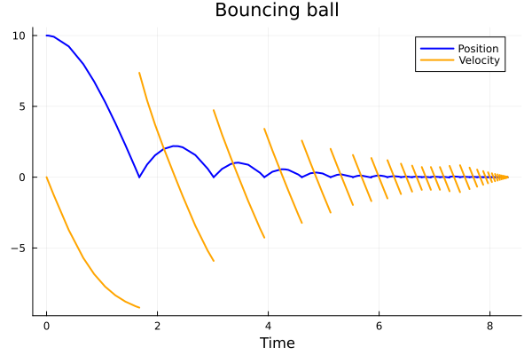

A General Example
A general system consists of the data $(f, h, \Delta)$ where
\[ \begin{cases} \dot{x} = f(x, t), & h(x) \ne 0, \\ x^+ = \Delta(x), & h(x) = 0. \end{cases}\]
\[ \begin{cases} \ddot{x} = -g -\alpha\cdot \dot{x} \cdot|\dot{x}|, & x > 0 \\[1ex] \dot{x}^+ = -e\dot{x}^-, & x = 0 \end{cases}\]
import HybridDynamics as HD
import Plots as plt
using LaTeXStringsfunction f_ball(x, t)
g = 9.81
α = 0.1
q, v = x
return [v, -g-α*v*abs(v)]
end
h_ball(x) = x[1]
Δ_ball(x) = [abs(x[1]), -0.8*x[2]]
sysG = HD.GeneralSystem(f_ball, h_ball, Δ_ball; direction=-1)
probG = HD.prob(sysG, [10.0, 0.0], (0.0, 15.0))
solG = HD.solve(probG)HybridDynamics.GeneralSol{Vector{Float64}, Vector{Vector{Float64}}, Vector{Vector{Float64}}}([0.0, 0.01, 0.04, 0.13, 0.4, 0.6630970081911003, 0.857880082582352, 1.0569556114682086, 1.2411560796045824, 1.4216166438114124 … 8.312054934535071, 8.312054934535071, 8.31446053721786, 8.316209020305283, 8.316209020305283, 8.31891532332342, 8.319546181443863, 8.319546181443863, 8.319546181443863, 8.319546181443863], [[10.0, 0.0], [9.999509508019456, -0.09809679225570615], [9.992154052167425, -0.3921948250950283], [9.91733353403148, -1.2682987240609997], [9.234905141959164, -3.730811748165578], [7.9825423190081555, -5.707081464352473], [6.755742737510703, -6.843136684338644], [5.300755102401951, -7.731352162115609], [3.8174883894961216, -8.343391246465401], [2.2698327484902863, -8.786124202453783] … [2.914094243259755e-7, -0.02552587046213321], [2.914094243259755e-7, 0.02042069636970657], [2.103057333392848e-5, -0.003178294478454892], [4.778615968230302e-7, -0.02033088512032708], [4.778615968230302e-7, 0.016264708096261665], [8.570465127897441e-6, -0.010284135979699736], [1.3053595563971692e-7, -0.01647284264854408], [1.3053595563971692e-7, 0.013178274118835265], [1.3053595563971692e-7, 0.013178274118835265], [1.3053595563971692e-7, -0.010542619295068213]], [[0.0, -9.81], [-0.09809679225570615, -9.809037701934914], [-0.3921948250950283, -9.794618321916868], [-1.2682987240609997, -9.649141834654525], [-3.730811748165578, -8.418104369974971], [-5.707081464352473, -6.552922115924443], [-6.843136684338644, -5.127148031945872], [-7.731352162115609, -3.832619374535029], [-8.343391246465401, -2.8487822508404523], [-8.786124202453783, -2.0904021499055885] … [-0.02552587046213321, -9.809934842993716], [0.02042069636970657, -9.810041700484023], [-0.003178294478454892, -9.809998989844422], [-0.02033088512032708, -9.809958665511022], [0.016264708096261665, -9.810026454072947], [-0.010284135979699736, -9.809989423654716], [-0.01647284264854408, -9.809972864545507], [0.013178274118835265, -9.810017366690875], [0.013178274118835265, -9.810017366690875], [-0.010542619295068213, -9.809988885317841]], [1.6734279757602986, 3.0140752146148984, 3.9292788589173004, 4.605921398957449, 5.1237494847982195, 5.527228180407411, 5.859523500648738, 6.150409252835753, 6.394072740546618, 6.595140804980519 … 8.253466440584702, 8.269352935825276, 8.28205984798242, 8.292212235646648, 8.300333367917903, 8.30684510448951, 8.312054934535071, 8.316209020305283, 8.319546181443863, 8.319546181443863], [13, 23, 31, 38, 43, 48, 52, 58, 63, 66 … 132, 138, 141, 144, 148, 153, 157, 160, 163, 165])times, states = HD.split_jumps(solG)
plt.plot(times, getindex.(states, 1), label="Position", lw=2, lc=:blue)
plt.plot!(times, getindex.(states, 2), label="Velocity", lw=2, lc=:orange)
plt.plot!(title = "Bouncing ball", xlabel = "Time", grid = true)